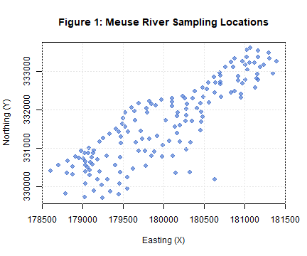
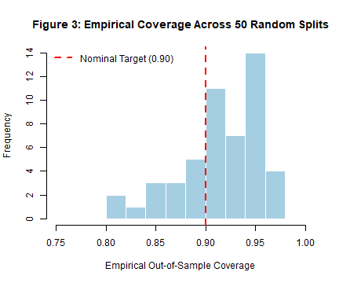
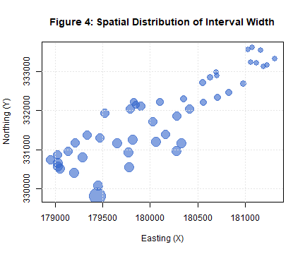
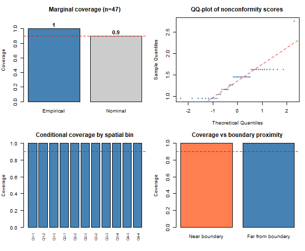
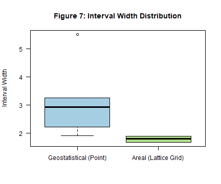
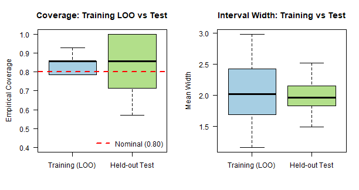

Introduction & Environment Setup
Source:code.md
This standalone replication script reproduces all figures, tables, Monte Carlo simulations, and empirical benchmarks presented in the Journal of Statistical Software (JSS) manuscript for the spconform package.
The spconform package provides distribution-free, model-agnostic prediction intervals for spatially and spatio-temporally dependent data via localized conformal calibration, relaxing classical exchangeability assumptions through spatial proximity kernels.
options(stringsAsFactors = FALSE)
# Set global pseudo-random number generator seed for exact reproducibility
SEED <- 123
set.seed(SEED)
# Output directory for saving standalone PDF figures and diagnostic artifacts
OUTPUT_DIR <- Sys.getenv("SPCONFORM_OUTPUT_DIR", unset = file.path(tempdir(), "figures"))
if (!dir.exists(OUTPUT_DIR)) dir.create(OUTPUT_DIR, recursive = TRUE)
cat(sprintf("[Setup] Destination for figure PDFs and artifacts: %s\n", OUTPUT_DIR))## [Setup] Destination for figure PDFs and artifacts: D:\TempFlutter\RtmpWO4a3P/figures
# Helper function to save PDF and display inline for knitr::spin HTML output
render_and_save <- function(filename, plot_code, width = 7, height = 5) {
pdf_path <- file.path(OUTPUT_DIR, filename)
pdf(pdf_path, width = width, height = height)
tryCatch(plot_code(), finally = dev.off())
plot_code()
}
# Load required libraries
suppressPackageStartupMessages({
library(spconform)
library(sp)
library(mgcv)
library(ranger)
library(bmstdr)
})Part 1: Geostatistical (Point-Referenced) Analysis
We illustrate localized split conformal prediction using the canonical Meuse River heavy metal dataset (). The target variable is log-zinc concentration measured at continuous spatial sampling coordinates.
data(meuse, package = "sp")
s <- as.matrix(meuse[, c("x", "y")])
y <- log(meuse$zinc)
n <- nrow(s)
# Define quadratic spatial trend surface as base regression predictor
pred_fun_quad <- function(s_train, y_train, s_new) {
fit <- lm(y_train ~ s_train[, 1] + s_train[, 2] +
I(s_train[, 1]^2) + I(s_train[, 2]^2))
cbind(1, s_new[, 1], s_new[, 2],
s_new[, 1]^2, s_new[, 2]^2) %*% coef(fit)
}Figure 1: Spatial Sampling Locations
Map of the 155 monitoring stations along the Meuse River flood plain.
render_and_save("fig1.pdf", function() {
plot(meuse$x, meuse$y,
col = rgb(0.2, 0.4, 0.8, 0.6), pch = 19, cex = 1.2,
xlab = "Easting (X)", ylab = "Northing (Y)",
main = "Figure 1: Meuse River Sampling Locations")
grid(col = "gray90")
}, width = 6, height = 5)
Figure 1: Meuse River Sampling Locations
Figure 2: Single Split Prediction Intervals
Evaluate a single 70% calibration / 30% test split with target nominal coverage .
set.seed(SEED)
idx_single <- sample(n, floor(0.7 * n))
s_train <- s[idx_single, ]; y_train <- y[idx_single]
s_test <- s[-idx_single, ]; y_test <- y[-idx_single]
out_single <- scp_geostatistical(
s_train = s_train,
y_train = y_train,
s0 = s_test,
pred_fun = pred_fun_quad,
alpha = 0.1,
seed = SEED
)
render_and_save("fig2.pdf", function() {
if (any(is.na(out_single$lower)) || any(is.na(out_single$upper))) {
valid <- !is.na(out_single$lower) & !is.na(out_single$upper)
out_plot <- out_single
out_plot$lower <- out_single$lower[valid]
out_plot$upper <- out_single$upper[valid]
out_plot$pred <- out_single$pred[valid]
plot(out_plot, y_true = y_test[valid],
main = "Figure 2: Geostatistical Prediction Intervals (Single Split)")
} else {
plot(out_single, y_true = y_test,
main = "Figure 2: Geostatistical Prediction Intervals (Single Split)")
}
}, width = 7, height = 5)## Error in `plot.default()`:
## ! formal argument "main" matched by multiple actual arguments
single_report <- coverage_report(out_single, y_test)
cat(sprintf("Single-split empirical coverage: %.3f\n", single_report$coverage))## Single-split empirical coverage: 1.000## Single-split mean interval width: 2.730Figure 3: Empirical Coverage Across 50 Monte Carlo Splits
Evaluate distribution-free coverage stability over 50 independent random partitions.
set.seed(SEED)
n_mc <- 50
coverages_mc <- numeric(n_mc)
widths_mc <- numeric(n_mc)
for (i in seq_len(n_mc)) {
idx_i <- sample(n, floor(0.7 * n))
s_tr <- s[idx_i, ]; y_tr <- y[idx_i]
s_te <- s[-idx_i, ]; y_te <- y[-idx_i]
out_i <- scp_geostatistical(s_tr, y_tr, s_te, pred_fun_quad,
alpha = 0.1, seed = i)
rep_i <- coverage_report(out_i, y_te)
coverages_mc[i] <- rep_i$coverage
widths_mc[i] <- rep_i$mean_width
}
render_and_save("fig3.pdf", function() {
hist(coverages_mc, breaks = 12, col = "#A6CEE3", border = "white",
main = "Figure 3: Empirical Coverage Across 50 Random Splits",
xlab = "Empirical Out-of-Sample Coverage", xlim = c(0.75, 1.0))
abline(v = 0.90, col = "red", lwd = 2, lty = 2)
legend("topleft", legend = "Nominal Target (0.90)",
col = "red", lty = 2, lwd = 2, bty = "n")
}, width = 6, height = 5)
Figure 3: Empirical Coverage Across 50 Random Splits
cat(sprintf("Mean MC coverage (50 splits): %.3f (SD: %.3f)\n", mean(coverages_mc), sd(coverages_mc)))## Mean MC coverage (50 splits): 0.920 (SD: 0.044)## Mean MC interval width: 1.973 (SD: 0.208)Figure 4: Spatial Distribution of Prediction Interval Width
Demonstrating spatial adaptivity: localized intervals naturally adapt to local sample density.
width_test <- out_single$upper - out_single$lower
render_and_save("fig4.pdf", function() {
plot(s_test[, 1], s_test[, 2], cex = width_test * 0.8, pch = 19,
col = rgb(0.2, 0.4, 0.8, 0.6),
xlab = "Easting (X)", ylab = "Northing (Y)",
main = "Figure 4: Spatial Distribution of Interval Width")
grid(col = "gray90")
}, width = 6, height = 5)
Figure 4: Spatial Distribution of Interval Width
Part 2: Spatial Diagnostics
We run comprehensive spatial diagnostics (diagnose()) to evaluate residual calibration across spatial subdomains and distance bins.
render_and_save("fig5.pdf", function() {
diag_meuse <- diagnose(
object = out_single,
y_true = y_test,
s_test = s_test,
n_bins = 4,
plot = TRUE
)
}, width = 8.5, height = 7)
Figure 5: Comprehensive Spatial Diagnostics
diag_meuse <- diagnose(object = out_single, y_true = y_test, s_test = s_test, n_bins = 4, plot = FALSE)
saveRDS(diag_meuse, file = file.path(OUTPUT_DIR, "spconform_diagnostics.rds"))
cat("Spatial diagnostics artifact saved to spconform_diagnostics.rds\n")## Spatial diagnostics artifact saved to spconform_diagnostics.rdsPart 3: Areal Lattice Conformal Prediction
We illustrate graph-based areal conformal prediction (scp_areal()) on regular lattice data aggregated from the Meuse dataset onto a 6x6 spatial grid.
xbreaks <- seq(min(meuse$x), max(meuse$x), length.out = 7)
ybreaks <- seq(min(meuse$y), max(meuse$y), length.out = 7)
meuse$cell_x <- cut(meuse$x, xbreaks, include.lowest = TRUE, labels = FALSE)
meuse$cell_y <- cut(meuse$y, ybreaks, include.lowest = TRUE, labels = FALSE)
meuse$cell_id <- (meuse$cell_y - 1) * 6 + meuse$cell_x
agg <- aggregate(log(zinc) ~ cell_id, data = meuse, FUN = mean)
names(agg) <- c("cell_id", "y")
cell_coords <- unique(meuse[, c("cell_id", "cell_x", "cell_y")])
agg <- merge(agg, cell_coords, by = "cell_id")
agg <- agg[order(agg$cell_id), ]
n_cells <- nrow(agg)
# Build Queen contiguity binary adjacency matrix
adj_full <- matrix(0, nrow = n_cells, ncol = n_cells)
for (i in seq_len(n_cells)) {
for (j in seq_len(n_cells)) {
if (i != j) {
dx <- abs(agg$cell_x[i] - agg$cell_x[j])
dy <- abs(agg$cell_y[i] - agg$cell_y[j])
if (dx <= 1 && dy <= 1) adj_full[i, j] <- 1
}
}
}
# Run areal localized conformal prediction (nominal 80% coverage)
out_areal <- scp_areal(agg$y, adjacency = adj_full, alpha = 0.2, decay = 0.5)Figure 6: Areal Prediction Intervals
Point predictions and conformal intervals across lattice cells.
render_and_save("fig6.pdf", function() {
if (any(is.na(out_areal$lower)) || any(is.na(out_areal$upper))) {
valid <- !is.na(out_areal$lower) & !is.na(out_areal$upper)
out_plot <- out_areal
out_plot$lower <- out_areal$lower[valid]
out_plot$upper <- out_areal$upper[valid]
out_plot$pred <- out_areal$pred[valid]
plot(out_plot, y_true = agg$y[valid],
main = "Figure 6: Areal Prediction Intervals (Lattice Grid)")
} else {
plot(out_areal, y_true = agg$y,
main = "Figure 6: Areal Prediction Intervals (Lattice Grid)")
}
}, width = 7, height = 5)## Error in `plot.default()`:
## ! formal argument "main" matched by multiple actual argumentsFigure 7: Interval Width Comparison (Geostatistical vs. Areal)
geo_w <- width_test[!is.na(width_test)]
areal_w <- (out_areal$upper - out_areal$lower)[!is.na(out_areal$upper - out_areal$lower)]
render_and_save("fig7.pdf", function() {
boxplot(list("Geostatistical (Point)" = geo_w,
"Areal (Lattice Grid)" = areal_w),
main = "Figure 7: Interval Width Distribution",
ylab = "Interval Width",
col = c("#A6CEE3", "#B2DF8A"),
las = 1)
}, width = 6, height = 5)
Figure 7: Interval Width Comparison
rep_areal <- coverage_report(out_areal, agg$y)
cat(sprintf("Areal empirical coverage: %.3f\n", rep_areal$coverage))## Areal empirical coverage: 0.810## Areal mean interval width: 1.790Part 4: Held-Out Areal Evaluation (Figure 8)
Cross-validation across 50 random splits on the areal lattice, evaluating training leave-one-out calibration versus out-of-sample test county/cell coverage.
n_reps_areal <- 50
alpha_areal <- 0.2
results_areal <- data.frame(
train_coverage = numeric(n_reps_areal),
train_width = numeric(n_reps_areal),
test_coverage = numeric(n_reps_areal),
test_width = numeric(n_reps_areal)
)
for (r in seq_len(n_reps_areal)) {
set.seed(r)
tr_idx <- sample(n_cells, size = floor(0.7 * n_cells))
te_idx <- setdiff(seq_len(n_cells), tr_idx)
y_tr <- agg$y[tr_idx]
y_te <- agg$y[te_idx]
adj_tr <- adj_full[tr_idx, tr_idx]
cal_out <- tryCatch(
scp_areal(y_tr, adjacency = adj_tr, alpha = alpha_areal, decay = 0.5),
error = function(e) NULL
)
if (is.null(cal_out)) next
tr_cov <- (cal_out$lower <= y_tr) & (y_tr <= cal_out$upper)
results_areal$train_coverage[r] <- mean(tr_cov, na.rm = TRUE)
results_areal$train_width[r] <- mean(cal_out$upper - cal_out$lower, na.rm = TRUE)
# Held-out calibration via BFS shortest graph hops
m_tr <- length(tr_idx)
cal_scores <- numeric(m_tr)
for (i in seq_along(tr_idx)) {
idx_loo <- setdiff(seq_along(tr_idx), i)
pred_loo <- if (length(idx_loo) > 0) mean(y_tr[idx_loo]) else 0
cal_scores[i] <- abs(y_tr[i] - pred_loo)
}
tau <- min(1, (1 - alpha_areal) * (m_tr + 1) / m_tr)
te_lower <- numeric(length(te_idx))
te_upper <- numeric(length(te_idx))
for (j in seq_along(te_idx)) {
target_node <- te_idx[j]
# BFS distance calculation
dist_vec <- rep(Inf, n_cells)
dist_vec[target_node] <- 0
queue <- target_node
while (length(queue) > 0) {
curr <- queue[1]; queue <- queue[-1]
nbrs <- which(adj_full[curr, ] == 1)
for (nb in nbrs) {
if (is.infinite(dist_vec[nb])) {
dist_vec[nb] <- dist_vec[curr] + 1
queue <- c(queue, nb)
}
}
}
w_vec <- exp(-0.5 * dist_vec[tr_idx])
adj_conn <- adj_full[target_node, tr_idx]
pred_pt <- if (sum(adj_conn) > 0) mean(y_tr[adj_conn == 1]) else mean(y_tr)
ord <- order(cal_scores)
sorted_s <- cal_scores[ord]
sorted_w <- w_vec[ord]
if (sum(sorted_w) > 0) {
cw <- cumsum(sorted_w) / sum(sorted_w)
q_hat <- sorted_s[min(which(cw >= tau))]
} else {
q_hat <- max(cal_scores)
}
te_lower[j] <- pred_pt - q_hat
te_upper[j] <- pred_pt + q_hat
}
te_cov <- (y_te >= te_lower) & (y_te <= te_upper)
results_areal$test_coverage[r] <- mean(te_cov, na.rm = TRUE)
results_areal$test_width[r] <- mean(te_upper - te_lower, na.rm = TRUE)
}
render_and_save("fig8.pdf", function() {
oldpar <- par(no.readonly = TRUE)
par(mfrow = c(1, 2), mar = c(4.5, 4.5, 3.5, 1.5))
boxplot(list("Training (LOO)" = results_areal$train_coverage,
"Held-out Test" = results_areal$test_coverage),
main = "Coverage: Training LOO vs Test",
ylab = "Empirical Coverage",
col = c("#A6CEE3", "#B2DF8A"),
ylim = c(0.4, 1.0), las = 1)
abline(h = 1 - alpha_areal, col = "red", lty = 2, lwd = 2)
legend("bottomright", legend = sprintf("Nominal (%.2f)", 1 - alpha_areal),
col = "red", lty = 2, lwd = 2, bty = "n")
boxplot(list("Training (LOO)" = results_areal$train_width,
"Held-out Test" = results_areal$test_width),
main = "Interval Width: Training vs Test",
ylab = "Mean Width",
col = c("#A6CEE3", "#B2DF8A"), las = 1)
par(oldpar)
}, width = 8.5, height = 4.5)
Figure 8: Held-Out Areal Evaluation
Part 5: Sensitivity Analysis Across Base Predictors
Evaluating conformal prediction robustness across multiple machine learning base predictors: 1. Quadratic Linear Model (lm) 2. Generalized Additive Model (mgcv::gam) 3. Random Forest (ranger)
pred_fun_gam <- function(s_train, y_train, s_new) {
train_df <- data.frame(x = s_train[, 1], y = s_train[, 2], z = y_train)
fit <- gam(z ~ s(x) + s(y), data = train_df)
new_df <- data.frame(x = s_new[, 1], y = s_new[, 2])
as.numeric(predict(fit, newdata = new_df))
}
pred_fun_rf <- function(s_train, y_train, s_new) {
train_df <- data.frame(x = s_train[, 1], y = s_train[, 2], z = y_train)
fit <- ranger(z ~ x + y, data = train_df, num.trees = 300,
mtry = 1, min.node.size = 5, seed = SEED)
new_df <- data.frame(x = s_new[, 1], y = s_new[, 2])
predict(fit, data = new_df)$predictions
}
set.seed(SEED)
n_splits_sens <- 50
res_lm <- data.frame(coverage = numeric(n_splits_sens), width = numeric(n_splits_sens))
res_gam <- data.frame(coverage = numeric(n_splits_sens), width = numeric(n_splits_sens))
res_rf <- data.frame(coverage = numeric(n_splits_sens), width = numeric(n_splits_sens))
for (i in seq_len(n_splits_sens)) {
idx <- sample(n, floor(0.7 * n))
s_tr <- s[idx, ]; y_tr <- y[idx]
s_te <- s[-idx, ]; y_te <- y[-idx]
# Linear Model
out_l <- scp_geostatistical(s_tr, y_tr, s_te, pred_fun_quad, alpha = 0.1, seed = i)
rep_l <- coverage_report(out_l, y_te)
res_lm$coverage[i] <- rep_l$coverage; res_lm$width[i] <- rep_l$mean_width
# GAM
out_g <- scp_geostatistical(s_tr, y_tr, s_te, pred_fun_gam, alpha = 0.1, seed = i)
rep_g <- coverage_report(out_g, y_te)
res_gam$coverage[i] <- rep_g$coverage; res_gam$width[i] <- rep_g$mean_width
# Random Forest
out_r <- scp_geostatistical(s_tr, y_tr, s_te, pred_fun_rf, alpha = 0.1, seed = i)
rep_r <- coverage_report(out_r, y_te)
res_rf$coverage[i] <- rep_r$coverage; res_rf$width[i] <- rep_r$mean_width
}
sens_summary <- data.frame(
Predictor = c("Linear Model (Quadratic)", "Spatial GAM (Splines)", "Random Forest (ranger)"),
Nominal = c("90.0%", "90.0%", "90.0%"),
Empirical_Coverage = sprintf("%.3f (SD: %.3f)",
c(mean(res_lm$coverage), mean(res_gam$coverage), mean(res_rf$coverage)),
c(sd(res_lm$coverage), sd(res_gam$coverage), sd(res_rf$coverage))),
Mean_Width = sprintf("%.3f (SD: %.3f)",
c(mean(res_lm$width), mean(res_gam$width), mean(res_rf$width)),
c(sd(res_lm$width), sd(res_gam$width), sd(res_rf$width)))
)
print(sens_summary)## Predictor Nominal Empirical_Coverage Mean_Width
## 1 Linear Model (Quadratic) 90.0% 0.909 (SD: 0.055) 1.940 (SD: 0.230)
## 2 Spatial GAM (Splines) 90.0% 0.913 (SD: 0.052) 1.839 (SD: 0.283)
## 3 Random Forest (ranger) 90.0% 0.904 (SD: 0.059) 2.035 (SD: 0.242)